Префектура Канагава · Ёкогама · где остановиться
InterContinental Yokohama Pier 8: отель на причале, окружённый морем с трёх сторон
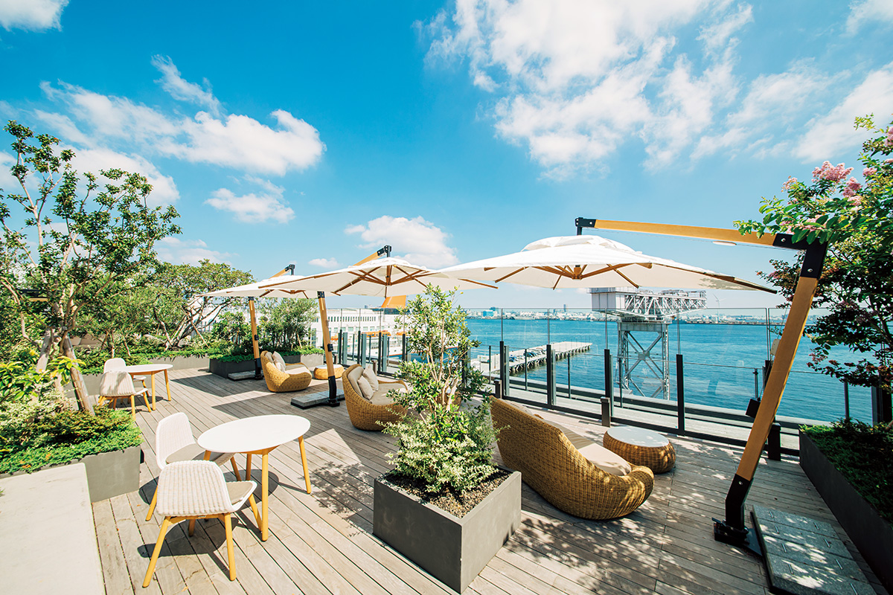
Пятиэтажный отель стоит на самом краю причала, и вода окружает его с трёх сторон. Из номера горизонт виден на уровне глаз, и кажется, что ночуешь не в городе, а на борту лайнера.
Место
Ночь как на круизном лайнере
InterContinental Yokohama Pier 8 стоит на причале Синко в Ёкогаме. Pier по-английски и значит «причал»: здание выходит к воде с трёх сторон, и для Японии такое положение отеля большая редкость.
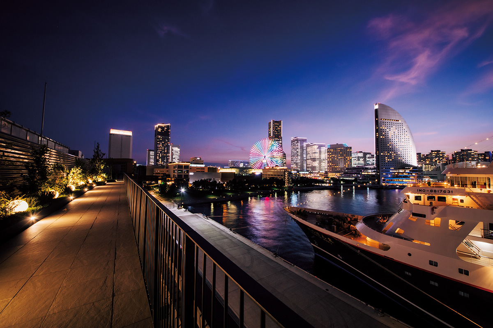
Номера делятся на три типа по виду из окна. Из номеров с видом на залив открывается весь порт Ёкогамы. Окна номеров с видом на город выходят на панораму Ёкогамы, которая днём и ночью выглядит по-разному. Номера со стороны сада смотрят на зелень внутреннего двора, где хорошо заметна смена сезонов.
Интерьеры напоминают о стильном морском путешествии, и повсюду расставлены остроумные арт-объекты. Работы в номерах нигде не повторяются: их специально для отеля создали молодые художники и дизайнеры, а также мастера традиционных ремёсел. Мини-бар в номере сделан в виде чемодана, и это тоже настраивает на дорожный лад.
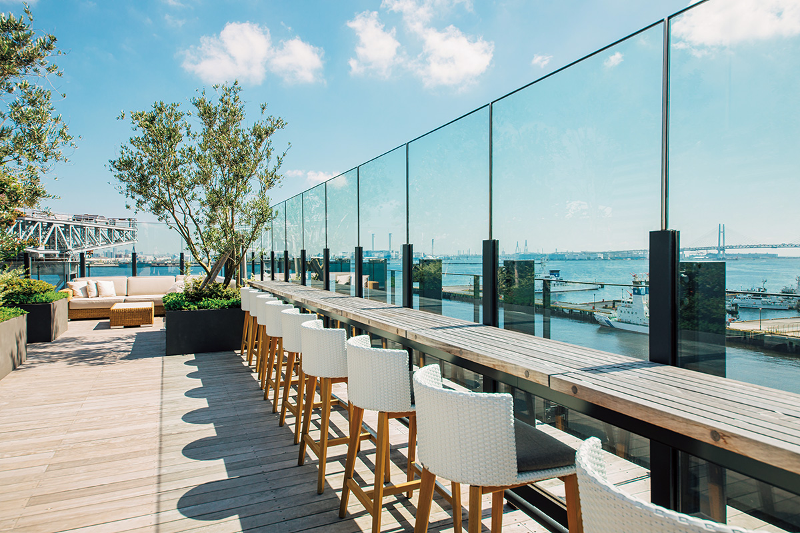
Отель всего в пять этажей, поэтому горизонт оказывается на уровне глаз, и ощущение палубы большого лайнера не покидает. Как и положено отелю на причале, у него есть собственный катер: на прогулке по заливу можно посмотреть с воды на большое колесо обозрения и Красные кирпичные склады.
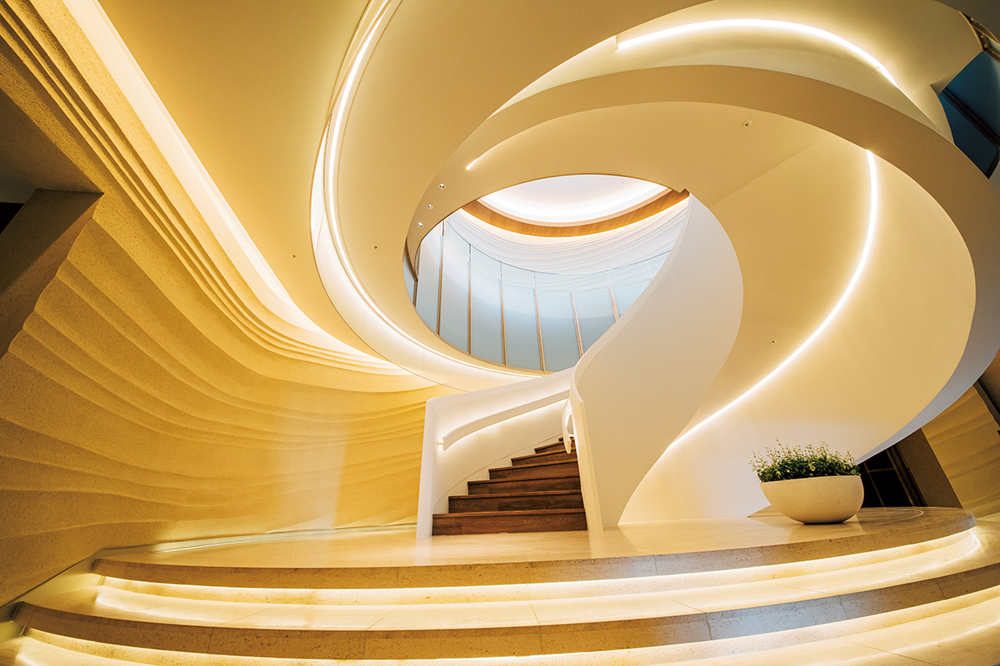
Даже те, кто хорошо знает Ёкогаму, увидят город по-новому. По словам отеля, есть гости из самой Ёкогамы, которые приезжают сюда каждую пятницу. Можно заселиться сразу после работы, а утром после выезда отправиться прямо в офис.
Номера
От делюкса до сигнатурного люкса
Больше всего в отеле номеров категории делюкс: в каждом 46 квадратных метров, и обстановка напоминает каюту на неспешном морском маршруте.
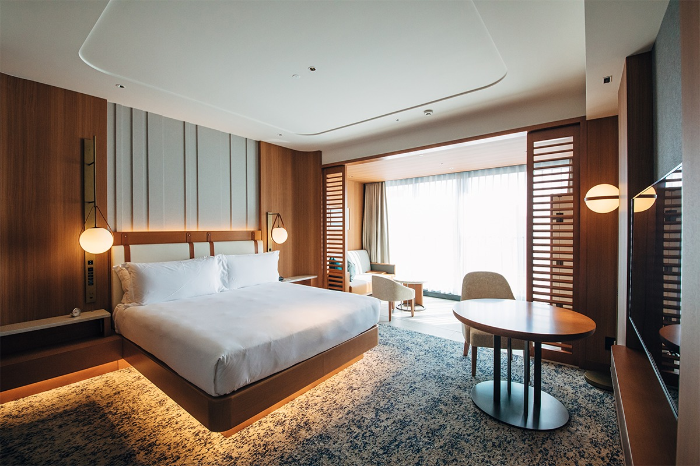
На пятом этаже всего два сигнатурных люкса площадью 133 квадратных метра. В каждом гостиная со столовой зоной и стильным камином, ванная комната с окном на море и балкон. Кровати королевского размера, матрасы Simmons чуть жестковаты, поэтому почти не проседают и не пружинят.
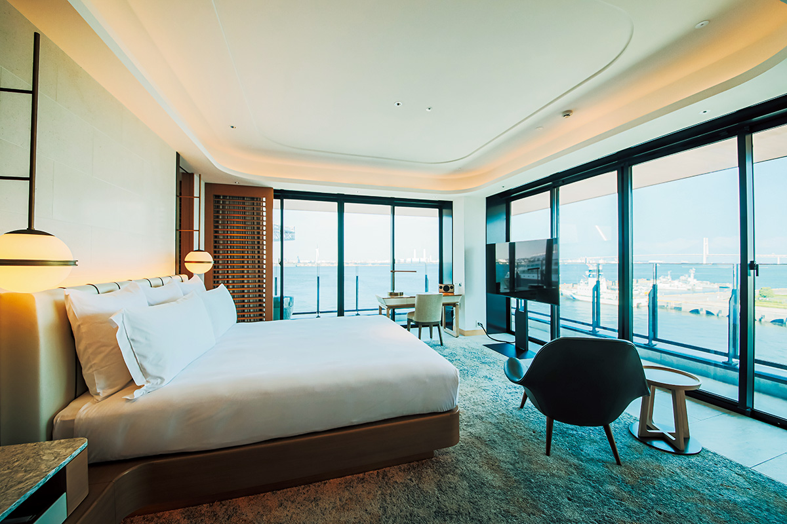
В номерах полотенца и халаты Garnier-Thiebaut, лёгкие, мягкие и хорошо впитывающие воду. Пижамы сшиты из египетского длинноволокнистого хлопка, косметика сан-францисской марки Agraria, а английская соль для ванны есть в каждом номере.
Клуб
Лаунж-зона, где меню меняется по часам
Гостям клубных номеров и люксов открыта лаунж-зона Club InterContinental. В ней есть столовая с лёгкими закусками и зона с диванами: можно поговорить с попутчиком, поработать за ноутбуком или наконец дочитать отложенную книгу. Рядом конференц-зал, его гости клуба могут забронировать на два часа.
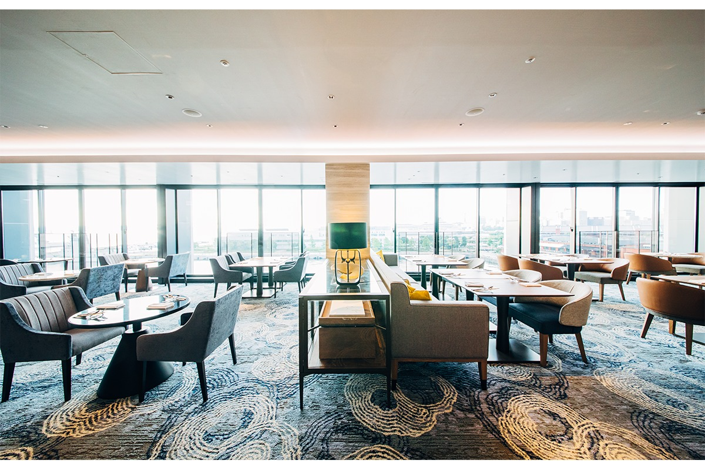
Зона работает с 7:00 до 21:00, заходить можно сколько угодно раз, а напитки и еда входят в стоимость. Утром здесь завтракают, с 14:00 до 17:00 подают настоящий послеобеденный чай со сконами, пирожными и канапе, а с 17:30 до 19:30 наступает время коктейлей. К закускам наливают шампанское Piper-Heidsieck Brut, игристое из винограда кошу, собственное пиво отеля Pier 8 Lager, виски Ichiro's Malt & Grain, а также сакэ, сётю, вино и безалкогольные коктейли.
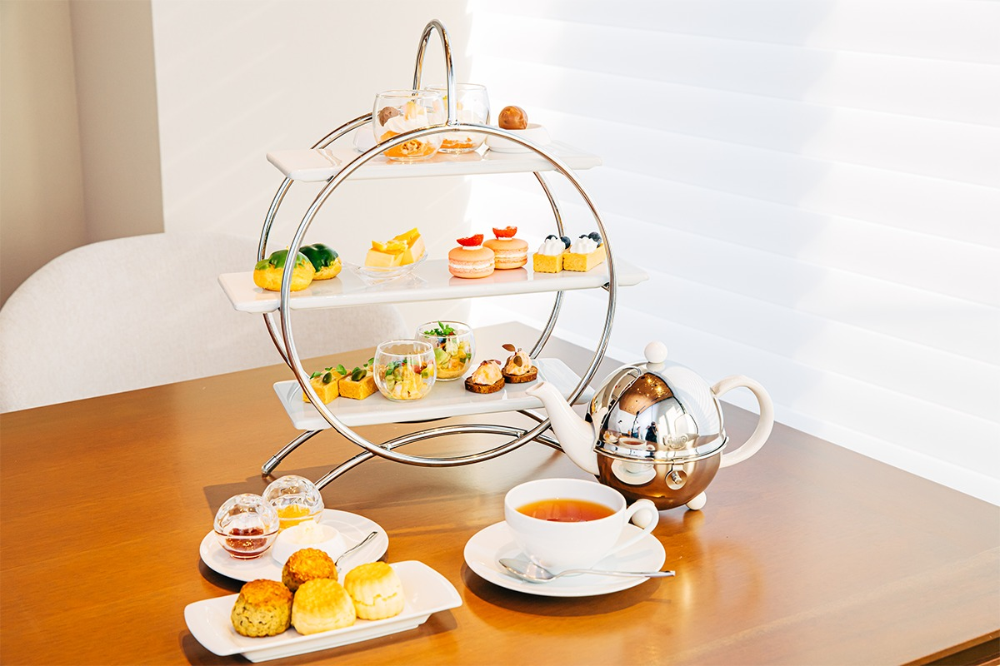
На завтрак выбирают континентальный, американский или японский вариант, а для тех, кто начинает день плотно, есть сет «Rise & Shine» со стейком из говяжьей вырезки.
Еду в номер приносят круглосуточно, а с 7:00 до 21:00 заказ можно получить и на крыше. Для завтрака там придумали набор «Пианик» с сэндвичами собственного приготовления, который едят как на пикнике. Цены в меню в 2020 году: ассорти закусок 2860 иен, тушёные местные овощи в кокотнице 1980 иен, карри с говяжьим языком, яйцом пашот и овощами 3080 иен, ягнёнок на гриле 3200 иен, стейк из японской говядины на рисе 4950 иен.
Ресторан
Larboard: пять вкусов на одной тарелке
Ресторан и бар Larboard устроен непринуждённо: здесь есть столики, барная стойка и терраса.
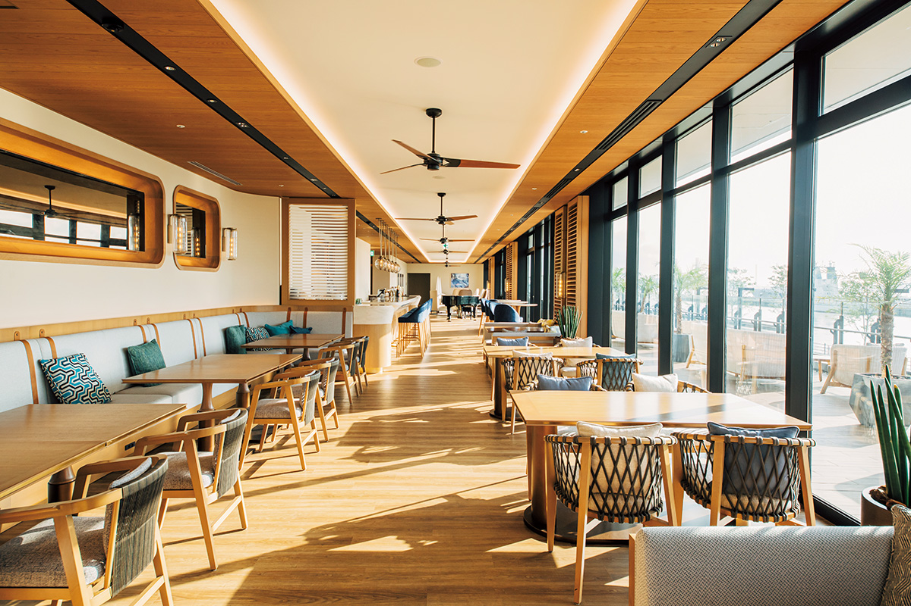
Шеф ресторана не раз становился призёром международных кулинарных конкурсов. Ужин начинается с амюз-буша из пяти частей, и каждая передаёт один из пяти вкусов: умами, кислый, горький, солёный и сладкий. Дальше идут омар с белым персиком и ароматом фундука, морской угорь в кляре с пенным грибным соусом и портвейном, японский морской окунь под соусом с эстрагоном и сливочным маслом и спинка австралийского ягнёнка на гриле со специями и домашним бисквитом из петрушки.
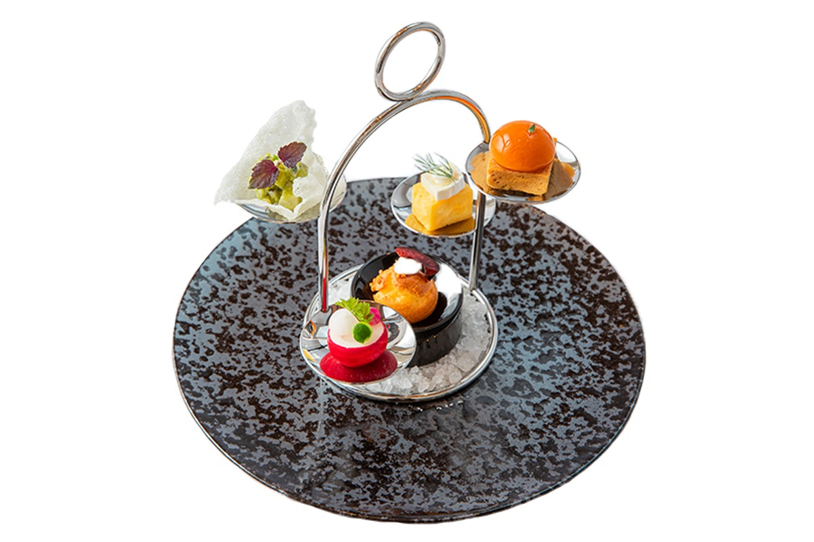
К каждому блюду подбирают вино: сухой херес Tio Pepe в роли аперитива, шардоне Mâcon La Roche Vineuse, выдержанное в дубе испанское белое Reto и чилийский карменер. На десерт две тарелки: апельсиновый тарт, с которым шеф получил награду на конкурсе, и холодный фруктовый «минестроне» с базиликовым сорбетом. К ним наливают журансон. Ужин в 2020 году стоил от 8000 иен, тот, что на снимках, 12 000 иен, с пятью винами 16 800 иен.
Суши
«Катабами» за садом
За зеленью внутреннего двора спрятан суши-бар «Катабами». Его стойка сделана из цельной доски японского кипариса хиноки.
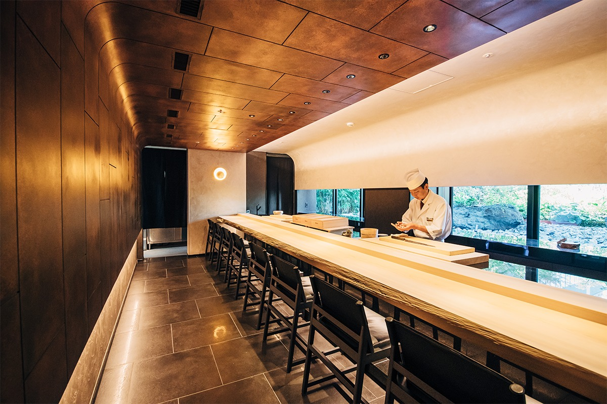
Здесь подают сеты с блюдами на гриле и горячим в котелке, но можно заказать и отдельные блюда или только нигири. Рекомендуем редкий мраморный тунец, а осенью серебристую рыбу.
Спа
Массаж и спортзал для гостей отеля
В спа только для гостей отеля делают массаж тела с ароматическими маслами на 60 или 90 минут, масло можно выбрать с сезонным ароматом. Есть кабинет для двоих. Рядом спортзал с современными тренажёрами, тоже только для гостей.
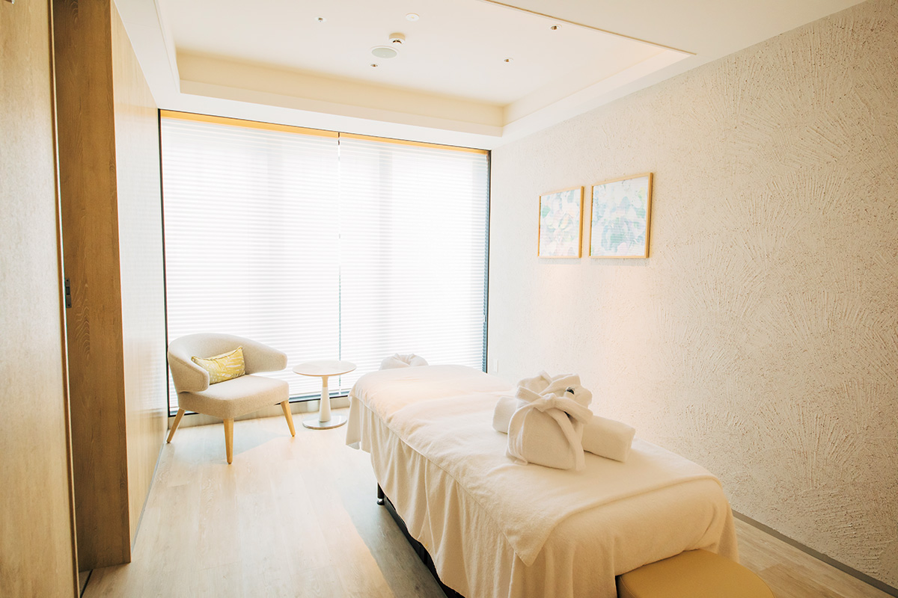
Отель вполне можно не покидать несколько дней подряд: море, еда и отдых здесь под одной крышей.
InterContinental Yokohama Pier 8
- Адрес
- префектура Канагава, Ёкогама, район Нака, Синко, 2-14-1
- Телефон
- +81 45-307-1111
- Номера
- 173
- Цены / Вход
- от 40 000 иен за номер за ночь (с налогом и сервисным сбором)
- Заезд / выезд
- 15:00 / 12:00
- Как добраться
- около 10 минут пешком от станции Басямити линии Минато Мирай, около 12 минут от станции Минатомирай, около 15 минут от станции JR Сакурагитё
Фото: Майко Фукуи.